Remote Asset Monitoring
Note
This lab is under development. Not all steps are complete or accurate.
As the Remote Operational Support Manager that needs to monitor 100s of assets across multiple sites. Monitor provides a single scalable place ingest sensor data, calculate key performance metrics so that I can monitor all my mission critical assets from a single dashboard.
Review High Severity Anomalies
I'm the Remote Operational Support Manager that needs to view my assets across multiple cities worldwide. Using Monitor, I can collect data from devices and organize them by hierarchy, location, assets and devices in dashboards so that I can be alerted about problems needing attention. Operational support can view asset information in Monitor that is collected via Historians from SCADA or from devices that are connected to the IOT Platform.
The Water Resource Authority has a water treatment facility in Bedford that has asset groups of sedimentation tanks and pumps. I will use a summary dashboard to quickly assess the operational condition for all the locations and for each asset type. I can also view individual asset instance dashboards.
- Open
Maximo Application Suiteand selectMonitor Application.
- Open
Monitortab
- Navigate to the
Device typestab and find the group calledSED_TANK_SIM_DEMO. - Select the top level group
- Select the
Sedimentation Tanks Demo Summarytab - Close the sidebar to view the entire
summary dashboard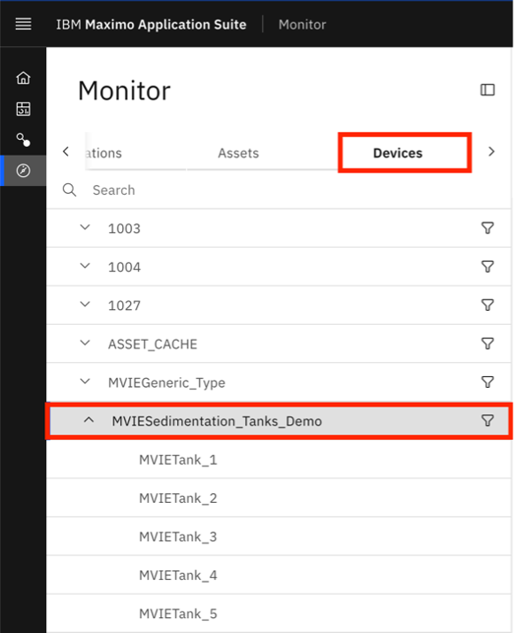 - Adjust the timeframe to see alerts on the Summary Dashboard as needed 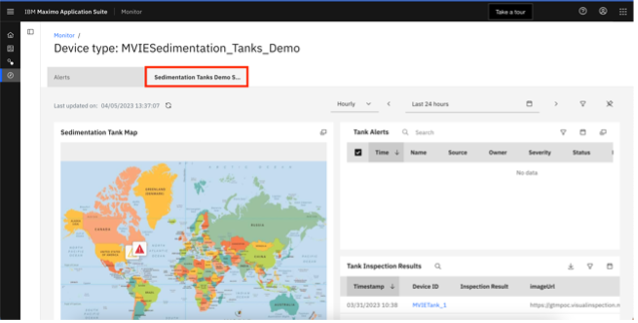
Tank Monitoring and Inspecting
I need to check on the cleanliness of sedimentation tanks in my facility. Over a period of time, tanks could build fungi or collect debris from the environment. Cases have been known for animals accidentally falling into our tanks.
Every tank in our facility is constantly monitored by cameras. The feeds from cameras are analyzed every hour by Maximo Visual Inspection’s AI model and uploaded as IoT events. Maximo Monitor maps and plots these details on the dashboards as assets. Rules are triggered to generate alerts. Monitor provides a single dashboard to review and act on alerts for all tanks around the facility. The summary dashboard tells me that Tank 1 is showing alerts.
- Select the tank that shows alerts by navigating to the
Tank1 instancedashboard, by clicking onTank 1in the alert table, the tank inspection results table, or from the sidebar. - Select the
Metrics Dashboardtab, hide the sidebar (if needed). 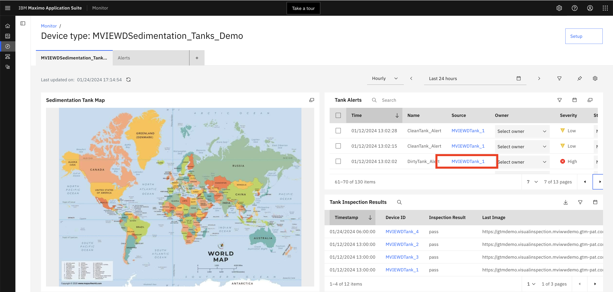 - Filter on
severity of alertsin thealert card. Adjust the timeframe to see alerts on theSummary Dashboardas needed to see alerts in any time period. 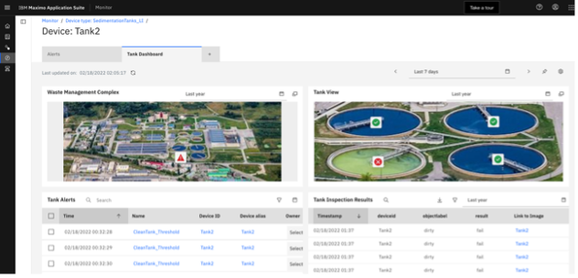
Tank Alerts
I can navigate to an individual asset Tank1 instance dashboard to review and act on alerts for the tank. I can tell by the alerts that the tank is getting to a critical status. The table card shows a list of rows pertaining to events for the specified tanks, with attributes identifying clean or dirty tanks. You can check the score of confidence in the Link to Image column in the Tank Inspection Results table to substantiate the findings.
- Click the link for the
tank inspections resultscharacterized asdirtythat has alerts 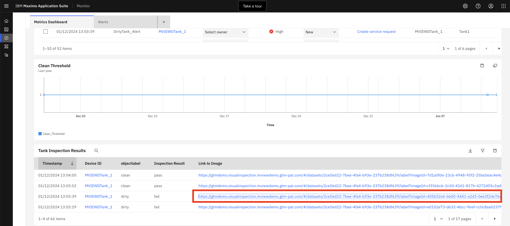 - Investiage tank visual inspection results. 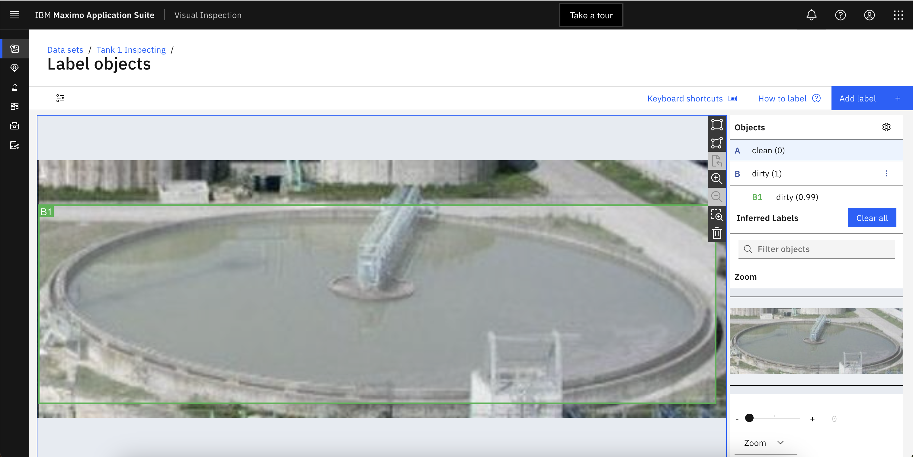
- You conclude that maintenance is needed to resolve the turbidity in the tank. To be sure you also investigate if there is a pump issue that maybe causing the problem.
Note
When navigating to Maximo Visual Inspection, login using the credentials that you received in your email for MVI Edge in your email, press continue, then close the tab, then click through again from the Inspection Results table.
Pump Alerts
Now I want to investigate my pumps to see if this is the cause of the turbidity
- Select
Monitorfrom the side nav bar. - Select the
Hierarchiestab. - Select
EAGLENA. 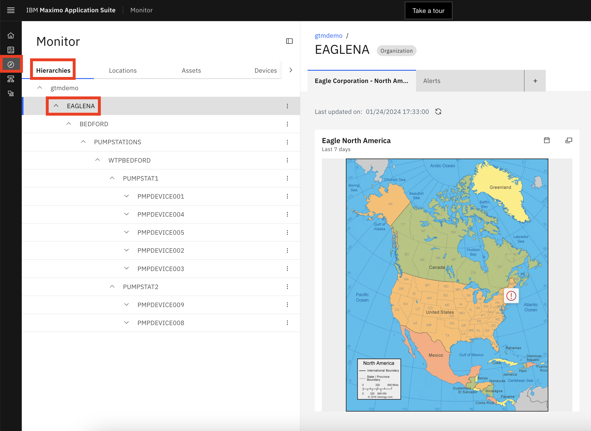 - You can close the
sidebarto increase the viewing area for the dashboard.
This shows me a map of real-time insights on problems with my assets. The hierarchy represents how the assets in my business are organized.
Dashboards are fully customizable and allow the operations manager to scale across multiple sites in a single dashboard to identify most urgent and critical problems. I see from the map that there were alerts against assets at the Bedford location.
- Navigate down the hierarchy to the Bedford site. By expanding the nodes in the hierarchy until you reach the Bedford site 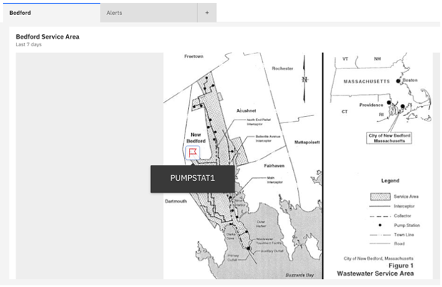
- Click on the node for Beford to see the dashboard for the Bedford site.
- A map of the Bedford service area shows that there is a problem at
PUMPSTAT1. Scroll down and check out the alerts.
The summary dashboard shows me a global map of sites of pumps and metrics, and gives real-time insights on problems with my assets. Dashboards are fully customizable and allow the operations manager to scale across multiple sites in a single dashboard to identify most urgent and critical problems.
8 see from the map that there were alerts against one of the pumps at that location.
- Scroll down and look at the alerts on the
Alerttab atPUMPSTAT1. I can see an alert forPMPDEVICE005on the alert dashboard atPUMPSTAT1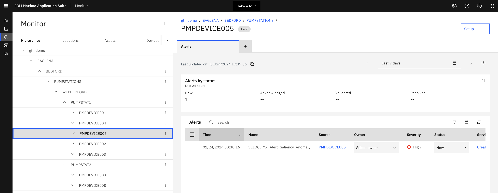 - Scroll to the Pump: PMPDEVICE005 dashboard (open the lowest level dashboard) 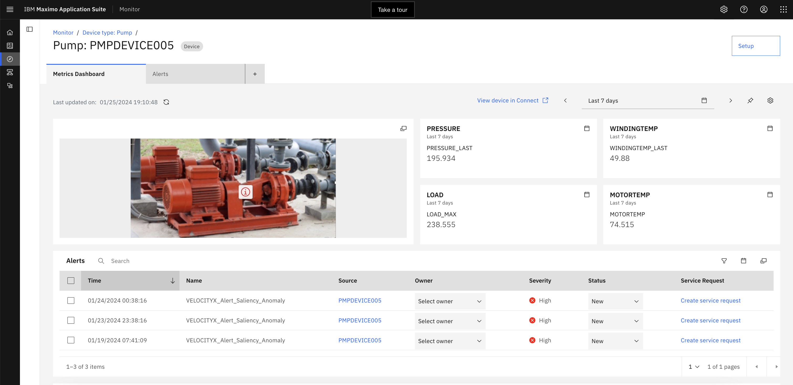
- Expand the alert card and filter on the High severity alerts. 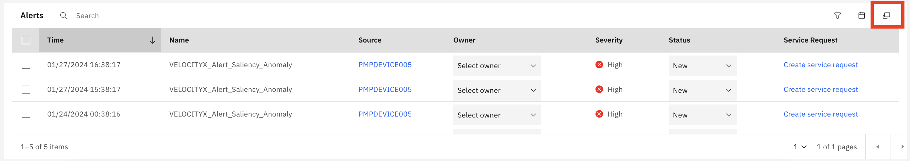 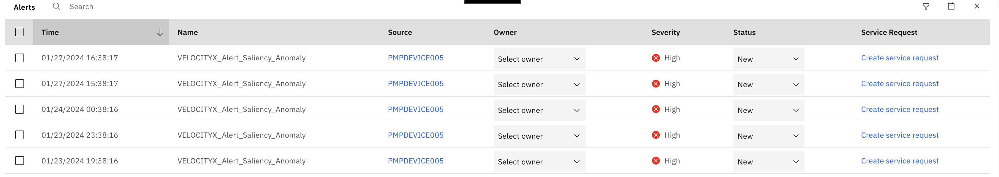
I will filter on the High severity alerts and see that there were recent alerts on Pump 005.
- Close the
alertcard. - Scroll down to
Asset Informationcard - click on
PMPDEVICE005. 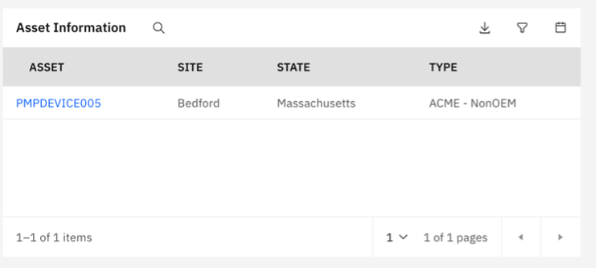
Understand Asset History
I can easily look at the asset history in Maximo from the table card and see what service was done on this pump. Perhaps, it was improperly serviced which is now causing the vibrations.
1. Click on PMPDEVICE005 in the Asset Information card.
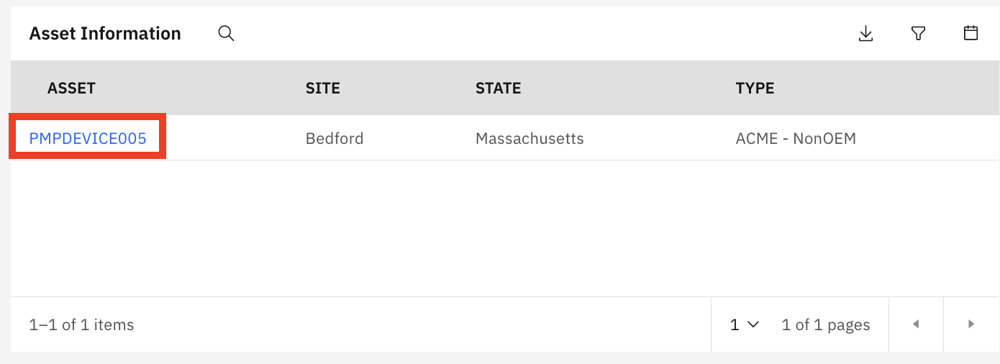
2. Click on Work tab in Maximo Manage
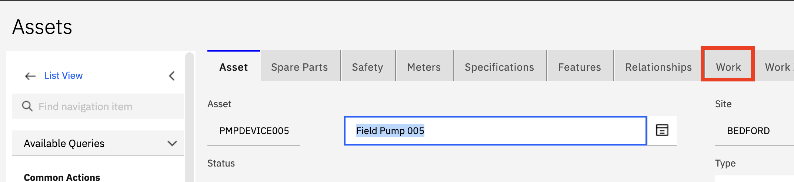
3. Filter on status COMP to see the latest completed work orders.
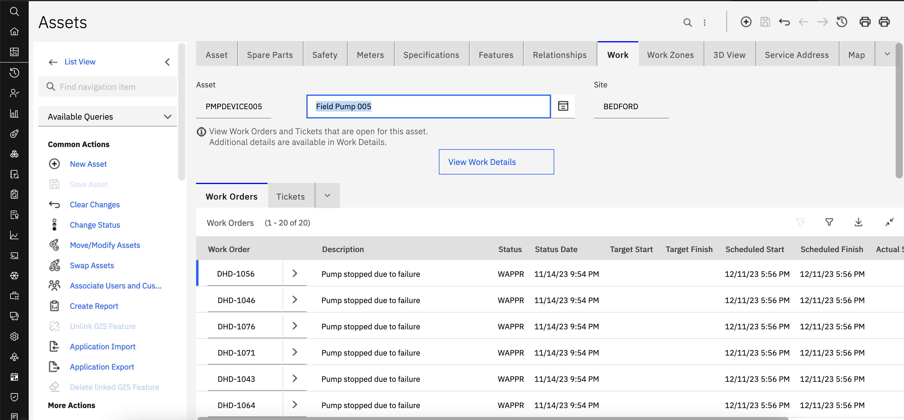
It looks like the water pump bearing housing and seals were replaced. The pump ran normally, but then began to vibrate again. Having this data at hand, allows the operations engineer to gain insights on the history of the asset to make informed decisions on how to proceed with maintenance. I dig deeper into investigation of the problem by looking at the alerts. There are many alerts on this pump to look at. Monitor provides a paradigm shift from traditional threshold-based alerts that become overwhelming to an AI-powered anomaly alerts to help remove the false positives. I filter on the high severity alerts and see there are just a few anomaly alerts.
- Go back to the device dashboard in Monitor and go to the
Alertsdashboard. 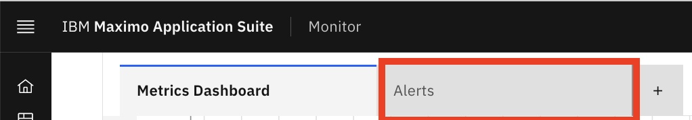 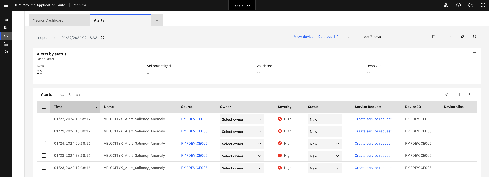 - Click on
Create service request - Complete the form by clicking on
Create. 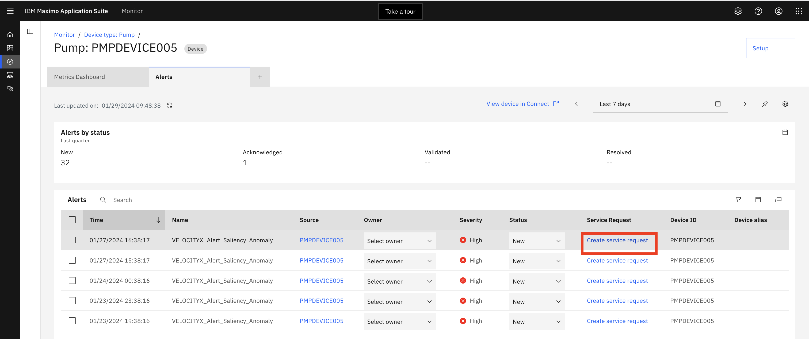 - You may also click on a
service requestthat has already been created to simply view it inManage. 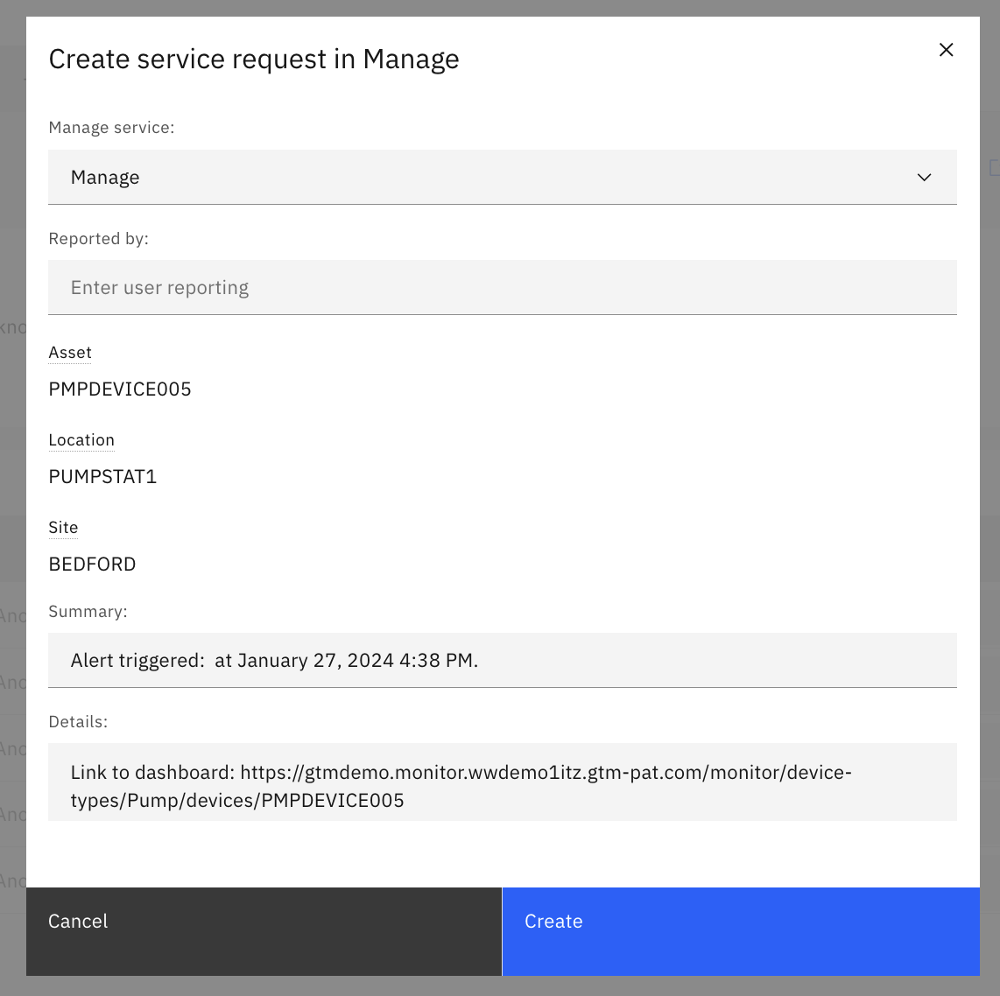
Upon detailed investigation of alerts for Pump 005, I created a new service request in Manage directly from Monitor alert dashboard for the Maintenance Supervisor to look at to see why vibrations have returned since the seals were recently replaced. The technician will reinspect the pump since he thought he fixed the vibration issue the last time it was worked on.
In Manage, I can view service request details, related work orders, service address, assign labor as well as verify and/or update service request status in Manage.
Data Ingestion and KPI Pipeline
Let's go to the asset type Setup and we can see there are live metrics flowing into Monitor like the Velocity vector are analyzed.
- In Monitor, navigate to
Setupin the left nav. 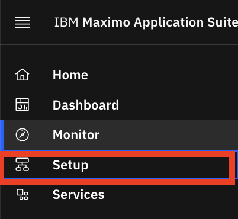 - Under the
Devices typestab choose Pump. 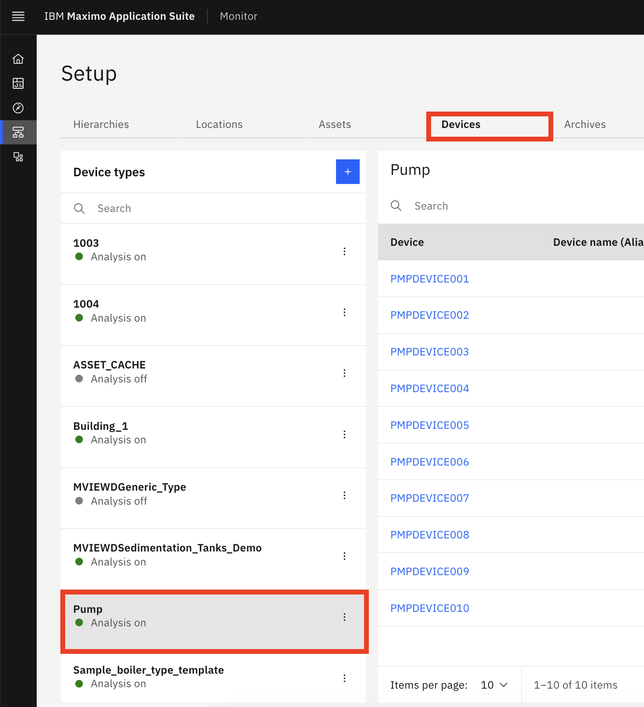 - Click on the
pencil/editicon - Expand the
Metricsection and click onVELOCITYXon the Pump. 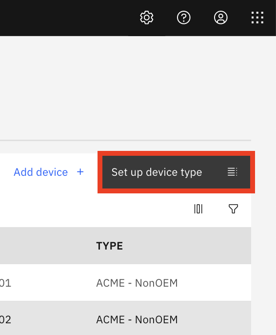 - Click on the
create metricnext to theBatch data metricsection to seet how AI models can be used to analyze incoming time series data from assets.
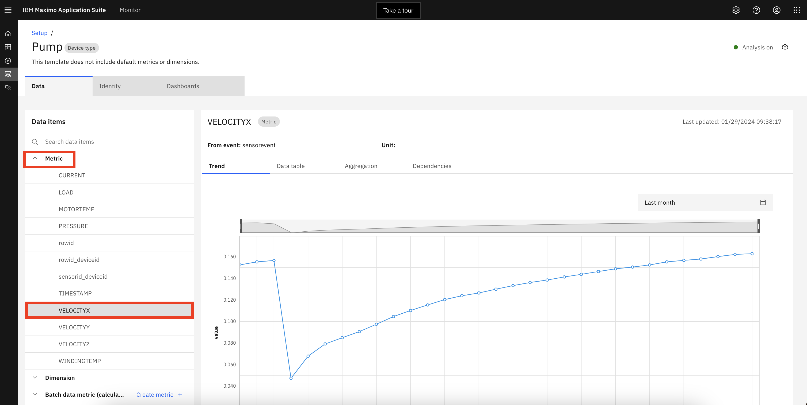
Monitor provides a variety of timeseries and statistical out of the box functions that allows a non-datascientist to perform live streaming or historical analysis of asset equipment sensor data. In the Metric section we can see data flowing in from our pumps for each sensor like vibration and temperature. In the Batch data metric section, built-in AI models or functions can be applied in Monitor with just a few clicks with no data science or development experience needed. New anomaly detection models can also be created in using Watson Studio and inferenced using Watson Machine Learning service that is invoked by the Monitor function pipeline.
Summary
As the Remote Operational Support Engineer, monitoring the water and waster water treatement facilities and assets across multiple sites I was able to use IBM Maximo Monitor to ingest sensor data, calculate key performance metrics, analyze these using AI models without the need for a datascientist. By using scalable summary dashboards I was able to quickly to identify assets high severity anomaly alerts, investigate those assets, and finally take an action to prevent a failure and unplanned downtown saving thousands of dollars, and maintaining the integrity of water treatment and distribution system.
Lets next see how the Asset Analyst manages the visual inspection models with Maximo Application Suite.